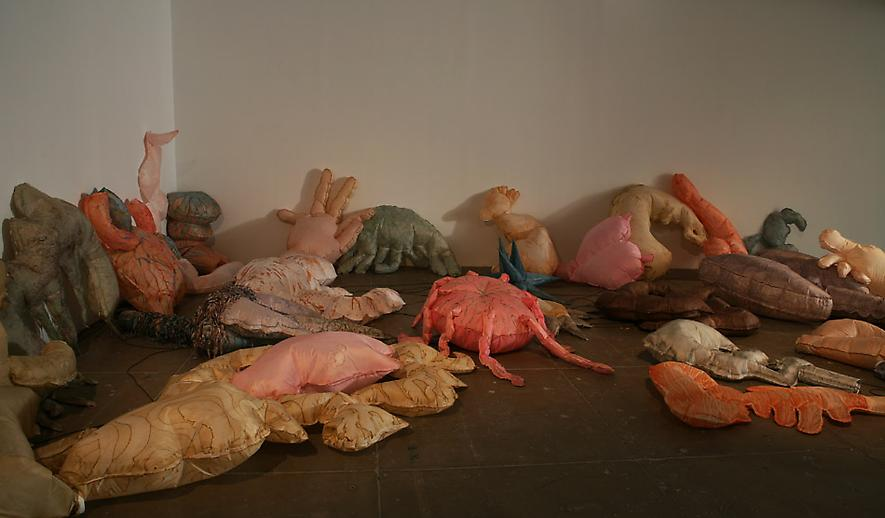

Ok, so this is a bit sculptural.
Annette Messager's "Inflating, Deflating" incorporates elements of both drawing and sculpture. Her sculptures are visceral in content and form, but also evoke a visceral response simply by their sheer size.